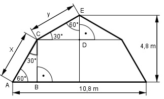

Pythagoras Aufgabe 59 Berechnen sie die Länge der Strecken x und y in m.

Wegen der Winkel sind die Dreiecke ABC und CDE halbe gleichseitige Dreiecke. --> AB = x/2 und DE = y/2 Satz von Pythagoras im Dreieck CDE : y2 = CD2 + DE2 | -DE2 y CD2 = y2 - (---)2 2 y2 CD2 = y2 - ---- | *4 4 4CD2 = 4y2 - y2 4CD2 = 3y2 | :4 CD2 = 0,75 y2 |√ CD = 0,866 y Satz von Pythagoras im Dreieck ABC: x2 = AB2 + BC2 |-AB2 x BC2 = x2 - (---)2 2 x2 BC2 = x2 - ---- |*4 4 4BC2 = 4x2 - x2 4BC2 = 3x2 |:4 BC2 = 0,75x2 |√ BC = 0,866 x DE + BC= 4,8 m y --- + 0,866 * x = 4,8 |*2 2 y + 1,732 * x = 9,6 |-1,732*x y = 9,6 - 1,732*x (1) AB + CD = 10,8/2 = 5,4 m x --- + 0,866 * y = 5,4 |*2 2 1,732y + x = 10,8 |-x 1,732 * y = 10,8 - x :1,732 10,8 - x y = ---------- (2) 1,732 (1) und (2) gleichgesetzt: 10,8 - x 9,6 - 1,732x = ----------- |*1,732 1,732 16,6 - 3x = 10,8 - x |-10,8 5,8 - 3x = - x +3x 5,8 = 2x |:2 x = 2,9 cm In (1) eingesetzt : y = 9,6 – 1,732 * 2,9 = 4,6 cm